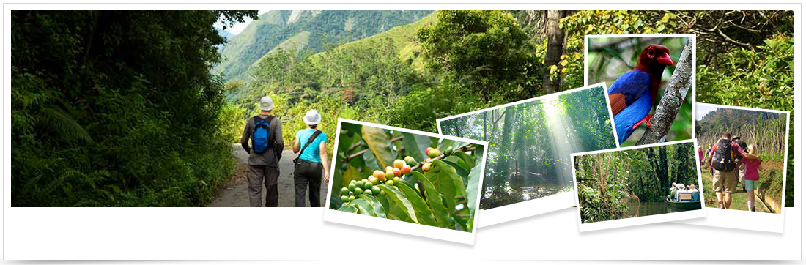

Jungle Wild Life Explorer
Tour Operators Sri Lanka and Holiday Travel Sri Lanka with green tree Travel Guides on your Vacation Trip
Day 1
Upon arrival transfer directly to St. Lachlan, a peaceful holiday resort located about 30 minutes from Colombo’s international airport. Rest and relax at the hotel, if time permits, do a city tour of Negombo. Overnight - St. Lachlan hotel - http://stlachlanhotel.com/
Day 2
Leave Negombo and reach Kithulgala, small town in Colombo – Nuwaraeliya road after approximate 2 hour drive from Colombo. Key attractions in this area includes rafting, rock pool sliding, Belilena cave expedition, natural swimming and bathing in Kelani River, small but biodiversity rich Kithugala Rain Forest (Makandawa Forest Reserve) and bird watching. 2 nights – Rafter’s Retreat - http://www.raftersretreat.com/index.html
Day 4
A major eco tourism destination in Sri Lanka approximate 160km, 3 hour drive from Kithulgala. It is most famous for the many elephants that live there (about 400 in total). During a visit, it is not unusual to see whole herds of adults and young elephants feeding or bathing and playing in the water! In addition to this main attraction, the park is home to many water buffalo, water monitor lizards, sambar deer, monkeys and the occasional leopard, as well as being an exciting location for bird enthusiasts. 2 Nights – Master Campers - http://www.mastercamperslanka.com/
Day 6
Leave after breakfast to the hills, 6500ft above sea level lies Sri Lanka’s highest and most isolated plateau. Nature lovers will revel in this wide, patna-grass covered plain, the haunt of many wild, yet harmless, animals and the home of many species of birds. Bridle paths will take you to the precipice known as World’s End – a sheer drop of 1,050 meters. Waterfalls are seen and heard everywhere in this hill country. You can see the "Baker’s falls" and “Worlds end” – a terrific escarpment drops vertically about 5000 ft. Go on a hike to see Lipton Seat, Englishman Thomas Lipton’s famous meditation spot, situated at a high mountain(optional).A panoramic view over the mountains and valleys. Rest and relax in the afternoon. Overnight - Melheim Resort - http://www.melheimresort.com/
Day 7
Leave hills for beautiful beach, 5 hour approximate drive. Trinco as it is commonly called has been a sea port since the days of the ancient Kings and one of the British Empire's most important ports in Asia during the Second World War. From 1941-45, Trinco had been the headquarters of Lord Louis Mountbatten Allied Southeast Asia commander. Also Trinco is a natural deep water harbor that attracted great sea farers like Marco Polo, Ptolemy and sea traders from East Asia from ancient times. 2 nights - Jungle Beach http://www.ugaescapes.com/junglebeach/
Day 9
Leave early, approximate 3.5 hour drive to Dambulla, visit the Cave Temple, a vast isolated rock mass and it was here that king Valagambahu took refuge in the 01st century B.C. He later turned the caves into a rock temple. Dambulla is a world heritage site and is the most impressive of Sri Lanka’s cave temples. The complex of five caves with over 2000 sq. meters of painted walls and ceiling found here are over 2000 years old and is the largest area of painting found in the world. The caves contain over 150 images of the Buddha of which the largest is the colossal figure of the Buddha carved out of rock and spanning 14 meters. Go for a game drive, 40 minutes Minneriya National Park, located between Habarana and Polonnaruwa is the 8890 hectares of Minneriya National Park which is an ideal eco tourism location in Sri Lanka. The park consists of mixed evergreen forest and scrub areas and is home to Sri Lanka's favorites such as sambar deer, leopards and elephants. However the central feature of the park is the ancient Minneriya Tank (built in 3rd century AD by King Mahasena). This tank is generally known as a place to observe the elephants who come to bathe and graze on the grasses as well as the huge flocks of birds (cormorants and painted storks to name but a few) that come to fish in the shallow waters. Climb the Sigiriya Rock Fortress which is known as the 8th wonder of the world. This rock fortress was built by King Kasyapa in the 5th century A.D. and was a royal citadel for more than 18 years. In a sheltered a pocket, approached by a spiral stairway, are the famous frescoes. The summit of the rock, with an area of nearly one hectare was the site of the palace and the outer wall was built on the very brink of the precipice. The UNESCO sponsored Central Cultural Fund has restored Sigiriya 5th century water gardens to their former glory. Enjoy a tuk tuk ride, a bullock cart ride, authentic meal and feel true Sri Lanka.
Day 11
A visit to Sri Lanka is incomplete without visiting Colombo. Approximate 3.5 hour drive back to the commercial capital of Sri Lanka. During your journey through the City of Colombo, you will visit the Bandaranaike Memorial International Conference Hall (BMICH) which is the very first purpose built convention center in Asia that combines the best of professional conference facilities available. The Independence Square, is also a must visit, which today has become a major tourist attraction due to its historical significance and extraordinary work of architecture. Your visit will see the Old Parliament of Sri Lanka and the gorgeous Galle Face Green facing the beautiful Indian Ocean. Also you would be given the opportunity to shop at the famous department stores and malls in Colombo where you would finds brands such as Marks and Spencer, Victoria’s Secret, GAP ect.. at bargain prices. The chauffeur will drop you to the airport 2 hours prior to your check in time of the flight.